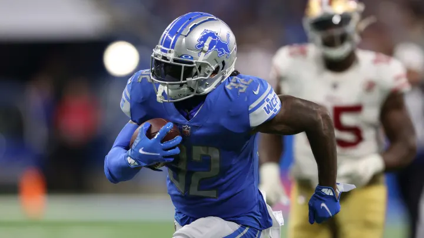

Week 1 Top Performers
QUARTERBACKS
1. Kyler Murray
Kyler changing plays at the line.
34.6 FPTS: 289 yards, 4 TDs, 1 INT, 1 Rushing TD
If there was one way to kickstart an MVP campaign, it would've been like this. Kyler dominated the game in all facets, making play after play to soundly beat a Titans team who won the AFC South last year.
2. Patrick Mahomes

Mahomes flexing after a touchdown.
33.3 FPTS: 337 yards, 3 TDs, 1 Rushing TD
Sorry, Cleveland. They did everything perfectly-- the only thing they did wrong was playing against Patrick Mahomes. He did very little in the first half, worrying fantasy managers as the Chiefs were down 22-10. Then, Patrick did what he does best and the NFL's best offense exploded for 26 points in a fantastic come-from-behind win in Cleveland.
3. Jared Goff
29.9 FPTS: 338 yards, 3 TDs, 1 INT
Don't be mistaken, Goff had a poor game this week. 338 yards on 57 attempts is NOT good. Luckily Goff owners, that doesn't matter in fantasy. The Lions got dominated the majority of the game and nearly staged a miraculous 4th quarter comeback. If they Lions continue to play from behind, Goff could easily be a viable fantasy option.
4. Jameis Winston
29.6 FPTS: 148 yards, 5 TDs, 37 rushing yards
Welcome to New Orleans, Jameis! The new Saints QB put in a spectacular performance against the reigning MVP Aaron Rodgers as the Saints took down the Green Bay Packers in an absolute beating, 38-3.
5. Tom Brady
29.2 FPTS: 379 yards, 4 TDs, 2 INTs
Tom Brady feels inevitable, doesn't he? The 44-year old seems immortal. Once the Bucs got the ball back down 1 point with 1:24 left, everyone knew what'd happen, and it did. As everyone waits for him to fall off a cliff, it doesn't look like it'll be this year. Expect him to once again battle for a top 5 fantasy QB finish this season.
RUNNING BACKS
1. Christian McCaffrey
23.2 FPTS: 98 rushing yards, 9 receptions, 89 receiving yards
CMC didn't miss a beat, making his first appearance since his season-ending shoulder injury last year. He didn't score a single touchdown, yet still led all running backs this week. That should tell you what to expect of him this season. A running back who isn't dependent on touchdowns is the most valuable thing in fantasy.
2. Joe Mixon
23.0 FPTS: 127 rushing yards, 1 TD, 4 receptions, 23 receiving yards
Holding true to this offseason's coach speak, Joe got the biggest workload of any running back this week. They plan to use him as their workhorse back. The Bengals went to Mixon time and time again, and it worked. He absolutely gashed the Vikings this week. After years of injury-riddled and inefficient seasons, this might be the year that Mixon finally breaks through as a top-5 running back.
3. Nick Chubb
21.1 FPTS: 15 rushes for 83 yards and 2 TDs, 2 receptions for 18 yards
Some may be concerned about this workload in a game where the Browns were leading most of the game. Let me tell you right now, it doesn't matter. In this offense, Chubb is going to be an efficiency monster. This is the best running attack in the league and as long as he's healthy, he's going to have a great season.
4. Jamaal Williams
21.0 FPTS: 9 rushes for 54 yards, 8 receptions for 56 yards, 1 TD
The first big surprise in the running backs. A new signing from the Green Bay Packers this season, Williams quickly left his mark on the Lions backfield. He demonstrated his prowess as a third-down back by making a massive impact in the passing game. Now, this work in the air was mostly back-loaded from when the game seemed out of reach, but this game script is what I fully expect all year.
5. D'Andre Swift

20.4 FPTS: 11 rushes for 39 yards, 8 catches for 65 yards, 1 TD
Somehow, another Lions running back ends up in the top 5 for week 1. The answer to, "Who Should I Start?" was simply, yes. Swift is a special back. Every time the offensive line made a hole for him, he hit a speed burst and shot through the line for big gains. He ran routes in over 60% of passing plays, which is what you expect from someone like Alvin Kamara. In a game where Swift was supposed to be limited, he proved why he should've been higher in most people's rankings.
WIDE RECEIVERS
1. Amari Cooper

32.4 FPTS: 17 targets, 13 receptions, 139 yards, 2 TDs
It's safe to say Amari Cooper had missed Dak. One of the best route runners in the game absolutely exploded on the first game of the NFL season. He effortlessly created separation all night and looked to be Dak's favorite red zone target. With an ADP of around the 3rd or 4th round due to questions surrounding Dak's health, he already seems to be the steal of drafts.
2. Tyreek Hill
31.6 FPTS: 15 targets, 11 receptions, 197 yards, 1 TD
Are we even surprised by Cheetah's blow up weeks anymore? With Mahomes, he always has a chance to be a week-wrecker for whoever is facing him. He'll be up and down, but the highs are worth the lows.
3. Deebo Samuel
27.4 FPTS: 12 targets, 9 receptions, 189 yards, 1 TD
Deebo, Deebo, Deebo, and some more Deebo. That was Jimmy Garrapolo's progression on Sunday. He did well to high point difficult passes and made a fantastic midair adjustment on the long touchdown, as well as showing us why he's the YAC king. His first 2 seasons in the NFL were marred by injury, but if he can stay healthy he could be due for a massive breakout year.
4. Adam Thielen
25.7 FPTS: 10 targets, 9 receptions, 92 yards, 2 TDs
Nobody should be surprised when Adam Thielen continues to perform at an elite level. He was relatively slept on during draft season because of Justin Jefferson's breakout last season, but this weekend he showed his consistency, great hands, and surprising physicality that makes him a must-start every week.
5. Corey Davis
24.2 FPTS: 7 targets, 5 receptions, 97 yards, 2 TDs
Corey Davis is the best Jets receiver and it isn't particularly close. He is essentially WR1 and WR2 in one player. He started his game by catching a dig for a first down and turning it into a 35 yard gain. Later on, he caught a 20-yard pass that set up a 22 yard TD to himself. On the last drive, he tallied 2 catches including a score. He's demonstrated that he's well worth his contract and he should be an every week must-start as a trusted outlet of his young QB.